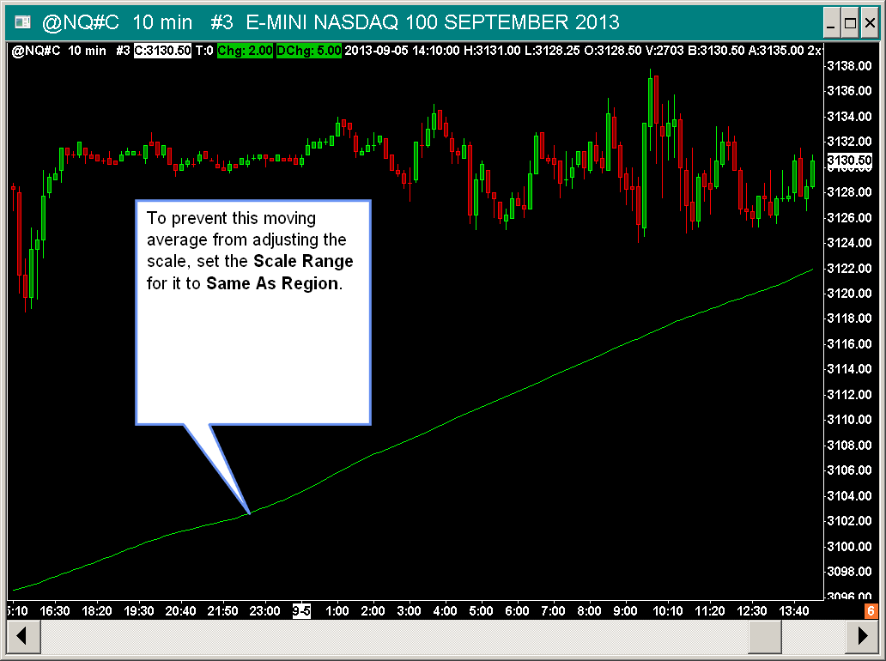

Chart Scale and Scale Adjusting
- Scale Window
- Opening the Scale Settings Window for the Main Price Graph
- Accessing Scale Settings through the Values Scale
- Opening the Scale Settings Window For a Study
- Scale Type
- Scale Range
- Automatic
- Independent
- Constant Range
- Constant Range Scale Modes >> Manual Mode
- Constant Range Scale Modes >> Keep The Last Bar Within View
- Constant Range Scale Modes >> Re-Center To The Last Bar On Every Update
- Constant Range Scale Modes >> Re-Center To The Last Price On Every Update
- Constant Range Scale Modes >> Re-Center When The Last Bar Exceeds A Certain Number Of Ticks From The Center
- Re-Center On Chart Scroll
- User Defined
- Same As Region
- Automatic Zero-Based
- Automatic Zero Centered
- Scale Increment
- Horizontal Grid Line Increment
- Number of Increments for Secondary Grid
- Scale Padding Percentage
- Reduce Interactive Scale Range Padding on New High/Low
- Include in Scale Width Calculation
- Use In Left Side Scale
- Constant Range Scale Recenter on Interactive Scaling Change
- Effect Of Window Sizes On Graph Display
- Basing Scale Only on Price Bars
- Maintaining Same Scale for Multiple Graphs in Chart Region
- Displaying Multiple Graphs in Chart Region
- X & Y Constant Relationship Scaling
- Using a Constant Range Scale
- Using Fixed Values for Top and Bottom of Scale Range
- Interactive Scaling
- Chart Bars or Studies Not Completely within View, Not Displayed, or Cut Off. Reset Scales
- Scaling the Chart DOM (Opens a new page)
Scale Window
The Scale Window is for setting the scale to use for the main price graph or study graphs on the chart. Each graph in the chart has its own Scale Settings.
{kind=link}
Opening the Scale Settings Window for the Main Price Graph
Follow the instructions below to open the Scale Settings window for a Chart or Trade DOM window.
- Select Chart >> Chart Settings on the menu.
- Select the Scale tab from the top menu.
- Press the Scale button at the top of the tab. Refer to the image below for its location.
- Adjust the settings as required.
- Press OK.
- Press OK.
{kind=link}
Accessing Scale Settings through the Values Scale
- Right-click on the Values Scale on the right side of the chart. The Scale menu will display.
- Select the Scale Range that you require.
- Or select Scale to open the Scale Settings window.
Opening the Scale Settings Window For a Study
- Select Analysis >> Studies.
- Select the particular study you want to modify the Scale settings for, in the Studies to Graph list.
- Press the Settings button.
- Select the Settings and Inputs tab.
- Press the Scale button.
- Adjust the settings as required.
- Press OK to close the Scale Settings window.
- Press OK.
- To quickly access the Study Settings window for a study refer to Quick Access to Study Settings on the Chart Studies page.
{kind=link}
Scale Type
The Scale Type settings are located in the Scale window. To open the Scale window for the main price graph, or a study, or by using other methods, refer to the Scale Window section.
Linear
With a linear scale, all values in the graph are evenly spaced across the region.
Logarithmic
With a logarithmic scale, smaller values take more space in the region as compared with higher values. This gives a clearer view of a graph when there has been a large percentage increase in prices or values over a period of time.
It is possible to easily change to a logarithmic scale for the main price graph of the chart through Chart >> Linear/Logarithmic Scale. Or you can add the Logarithmic Control Bar button through Global Settings >> Customize Control Bars >> Control Bar #.
When a logarithmic scale is enabled for the chart you will see Log displayed in the lower right of the chart.
When any of the data in the visible chart bars has a negative or 0 value, then logarithmic scaling is automatically disabled. This also applies to studies as well which are set to use a logarithmic scale.
{kind=link}
Scale Range (Scale Settings)
The Scale Range setting specifies how the highest and lowest value of the chart scale for the Main Price Graph or a Study is determined.
To set the Scale Range for the main price graph, refer to Opening the Scale Settings Window for the Main Price Graph. To set the Scale Range for a study, refer to Opening the Scale Settings Window For a Study.
If you have used Interactive Scale Move to move the vertical scale of the chart up or down, this will alter the scale from the default that the selected Scale Range setting has set for the visible scale. In this case, right-click on the Values Scale of numbers on the right side of the chart and select Reset to remove any Interactive Scale Move adjustments, or double-click the Values Scale on the right side of the chart to perform a reset.
Automatic (Scale Range)
The top and bottom values for the scale range for the price or study graph are automatically set.
The top and bottom values are the highest high and the lowest low respectively, of all graphs in the Chart Region which have their Scale Range set to Automatic.
The Interactive Scale Locked command on the right click shortcut menu on the right side Values Scale, does not lock the Automatic scale top and bottom values. These values will be updated as needed according to the graphs in the Chart Region.
Independent (Scale Range)
The top and bottom values for the scale for the graph are automatically set and are determined from the study graph itself and not other graphs which are in the same region. This allows you to overlay multiple graphs in a region which have different scale ranges and values. For example you can overlay a stochastic on the main price graph in region 1. To do this you would set the stochastic to display in region 1 and set its scale to Independent.
The Independent scale is useful when overlying studies on the main price graph or over other study graphs. It is the default scale for the Overlay study.
A graph that uses an Independent scale range type uses a completely independent scale. Graph values will not match the same values on other graphs in the same region. Graph lines that are over a certain position on another graph in the region may not be over that same position as you change bar spacing, scroll the chart to a different position, or change the size of the window.
Constant Range (Scale Range)
When the Constant Range option is enabled, the difference between the top and bottom values for the scale will always be equal to the specified Range value.
There are additional modes that control the automatic behavior of the vertical scale when using a Constant Range scale. They are documented below.
Constant Range Scale Modes
Constant Range Scale Modes >> Manual Mode
The vertical scale will not change with any new bars or values, it will only change with user interaction. Pressing the End key on your keyboard, or double-clicking on the values scale area on the right side of the chart will re-center the vertical scale to the last bar in the chart or last trade price in the case of a Trade DOM.
Constant Range Scale Modes >> Keep The Last Bar Within View
The vertical scale will be automatically adjusted to ensure that the High and Low of the last bar always are within a specified number of ticks from the top or bottom edge of the chart. The scale will not adjust until such time that the High or Low of the last chart bar are less than the specified number of ticks from the top or bottom of the chart.
However, if you have used Interactive Scale Move to move the vertical scale of the chart up or down, the High and Low of the last bar could possibly move outside of the visible view, in which case this option cannot keep the last bar High or Low within view. In this case, right-click on the scale of numbers on the right side of the chart and select Reset to remove any Interactive Scale Move adjustments, or double-click the scale on the right side of the chart.
Pressing the End key on your keyboard, or double-clicking the values scale area on the right side of the chart will re-center the vertical scale to the last bar.
In the case of a Trade DOM the last trade price is used instead since there are no visible chart bars.
Constant Range Scale Modes >> Re-Center To The Last Bar On Every Update
The vertical scale will be automatically adjusted each time the chart is updated so that the center of the scale will match the combined average prices of the last two visible bars. Or the last trade price in the case of a Trade DOM.
Be aware that if the price difference between the last two visible bars is greater than the range of the scale, then both bars potentially could end up off the top and bottom edges of the chart, which could give the appearance of a blank chart. This paragraph does not apply to a Trade DOM.
In the case of a Trade DOM the last trade price is used instead since there are no visible chart bars.
Constant Range Scale Modes >> Re-Center To The Last Price On Every Update
The vertical scale will be automatically adjusted each time the chart is updated so that the center of the scale will match the last price of the last visible last bar or the last trade price in the case of a Trade DOM.
Constant Range Scale Modes >> Re-Center When The Last Bar Exceeds A Certain Number Of Ticks From The Center
This Constant Range Scale Mode only applies to Intraday charts. It cannot be selected for Historical Daily charts.
The vertical scale will be automatically adjusted to re-center to the last bar (or last trade price in the case of a Trade DOM) only when the last bar/price exceeds a specified number of ticks from the current center of the scale.
The number of ticks is specified with the Ticks from Center setting directly below the Constant Range Scale Mode list.
The scale will will be adjusted within the timeframe specified by the Adjust Interval (ms) setting, also directly below the Constant Range Scale Mode list.
Adjust Interval (ms) specifies the number of milliseconds to complete the adjustment. Adjust this as required to not cause any sudden jumps. This can be set to a minimum of 1 ms.
Pressing the End key on your keyboard, or double-clicking the scale area on the right will immediately re-center the vertical scale to the last bar (or last trade price in the case of a Trade DOM).
This Constant Range Scale Mode can only be used on the main price graph.
{kind=link}
Re-Center On Chart Scroll (Scale Range)
This only applies when using a Constant Range scale. When the Re-Center On Chart Scroll option is enabled, the vertical scale will be re-centered any time the scroll bar or arrow keys are used to scroll the chart.
This option does not apply to a Trading DOM since that cannot be scrolled horizontally.
The default for this option is enabled.
User Defined (Scale Range)
The top and bottom values for the scale range for the graph are set to the values you enter in the Top of Range and Bottom of Range text boxes in this window.
Same As Region (Scale Range)
When the Same As Region option is enabled, the top and bottom values for the scale range for the graph are the same as other graphs in the Chart Region which are set to Automatic. The highest high or lowest low of the graph does not affect the top and bottom values for the scale range.
This keeps a study with a wider range from compressing the other graphs in the same Chart Region.
This is a useful Scale Range type to use for overlaying Moving Averages and other studies on the main price graph when those studies cause the main price graph to become compressed because the studies occupy a wider range than the main price graph.
When using this Scale Range type with a study which is displayed in Chart Region 1, the main price graph needs to be set to Automatic and the study needs to be set to Same As Region.
Automatic Zero-Based (Scale Range)
This scale range is similar to Automatic where the top and bottom values for the scale range for the graph are automatically set based upon the displayed range of values for the graph. The difference is that the bottom value is always zero. By default this is used with the Volume study. When this Scale Range Type is used, neither Interactive Scale Range or Interactive Scale Move Interactive Scaling methods will work.
Automatic Zero Centered (Scale Range)
This scale range sets the zero level as the center of the scale for the study or the main price graph.
Scale Increment (Scale Settings)
The Scale Increment setting is for the increment between the scale number labels displayed in the Values Scale on the right and left side of the chart. Set this to 0 for automatic labeling. In the case of the main price graph, the automatically set increment is always a multiple of the chart Tick Size.
Horizontal Grid Line Increment (Scale Settings)
The Horizontal Grid Line Increment displays and sets the increment between Horizontal Grid lines in the chart region of the main price graph or study that you are modifying the Scale Settings for.
Set this to 0 to use the same value as the Scale Increment.
Number of Increments for Secondary Grid (Scale Settings)
The Number of Increments for Secondary Grid defines the increment of the Horizontal Grid that will be highlighted using the Chart Grid Secondary graphics settings when the Horizontal Grid is displayed.
As an incremental value, this is defined as every n'th gridline. For example, an entry of 4 will result in every 4th gridline being drawn using the Chart Secondary Grid graphics settings rather than the Chart Grid settings.
Scale Padding Percentage (Scale Settings)
The Scale Padding Percentage determines the amount of blank space above the highest bar and below the lowest bar for the graph.
The value is entered as a percentage and uses this percentage of the displayed bar range to determine the top and bottom spacing.
Reduce Interactive Scale Range Padding on New High/Low (Scale Settings)
When this option is enabled, any increased amount of padding above or below the chart bars added by increasing the range of prices with Interactive Scale Range, is reduced as there is a new high or low in the main price graph during chart updating.
The amount the padding is reduced by is equivalent to the expansion of the highest high and lowest low of the price graph by the new high or low.
This option only applies to the main price graph and not to studies.
Include in Scale Width Calculation
When this option is enabled, the width of the values of the study graph displayed on the left or right side chart Values Scale affect the width of the Values Scale region. Otherwise, they do not.
To change this setting, refer to Opening the Scale Settings Window For a Study.
Use In Left Side Scale
When the left-side values scale is displayed, then the first study that has this option enabled will determine the scaling for the left-side scale for that region
The order in which the studies are evaluated follows the order of the studies in the Chart Studies window from top to bottom.
Although this will allow a study to set the left-side scaling, the study must be set to a scale other than Automatic or Same As Region in order for the scaling to work properly.
This setting only applies to studies. It has no affect on the scaling of the Main Price Graph or those studies that replace the Main Price Graph.
Constant Range Scale Recenter on Interactive Scaling Change
When this setting is enabled and the Trading DOM price has automatically moved from the center of the Trading DOM (due to market pressures), then when a change is made to adjust the scale, it will first recenter the price and then perform the adjustment.
This setting only applies to the Trading DOM. It does not have any effect on the Chart DOM.
Effect Of Window Sizes On Graph Display
With larger chart window sizes or decreased bar spacing, more of a study graph is visible which increases the range of the graph.
The range is the highest high minus the lowest low of the study graph values displayed.
Areas of the study graph which have a small range will appear to be more compressed compared with that same area in a smaller window size or with increased bar spacing because under these conditions the chart region will display a smaller range of values making the area of the study more zoomed.
Basing Scale Only on Price Bars
{kind=link}
Sometimes you may not want to have studies which are displayed in Chart Region 1 where the main price graph is, affect the scale of the main price graph. For example, in this image (right) you can see the Moving Average study affect the price scale.
To prevent this, set the Scale Range for the study to be Same As Region. For instructions to set the scale for a study, refer to Opening the Scale Window For a Study.
To ensure there have been no Interactive Scale Range or Move adjustments on the main price graph which can also cause it to become partially out of view or compressed or expanded, select Chart >> Reset Scales.
Maintaining Same Scale for Multiple Graphs in Chart Region
When there are multiple study graphs displayed in a Chart Region, and you want them to all use the same scale so that they remain synchronized to each other, then follow the instructions below.
If the study graphs including the Main Price Graph, are in the same chart region and are not using the same Scale Settings, they will not be vertically synchronized with each other. In other words they will be misaligned in relation to each other.
- For each study in the same Chart Region, set the Scale Range for the study to Automatic. Follow the instructions in the Opening the Scale Window For a Study section to do this.
- When studies are in Chart Region 1, it is also important that the main price graph is set to have an Automatic Scale Range. To do this, refer to Opening the Scale Settings Window for the Main Price Graph. Set the Scale Range for the Main Price Graph to Automatic.
- For any study in the Chart Region that you do not want to have share the same scale with the other studies, then set its Scale Range to Independent. Follow the instructions in the Opening the Scale Window For a Study section to do this.
Displaying Multiple Graphs in Chart Region
To display multiple graphs in the same chart region when and when they use different range of values, it is necessary that each of the studies use an Independent Scale Range.
This will put them into the same view in the Chart Region. But there is no way to specifically align them within the Chart Region if they are all using different scales.
To change the scale for a study, refer to Opening the Scale Settings Window For a Study.
X & Y Constant Relationship Scaling
X & Y Constant Relationship Scaling maintains a constant relationship between the right side Values Scale and the Time Scale or bar spacing in a chart.
{kind=link}
Therefore, when you change the Values Scale by expanding or compressing the price range, the Time Scale or bar spacing will automatically adjust to maintain the original ratio between the two.
Likewise, when you alter the bar spacing in the chart, which is done by adjusting the spacing for the Time Scale, the Values Scale will automatically expand or compress to maintain the original ratio between the two.
Only the main price graph in the chart supports Constant Relationship Scaling.
Only the Constant Range Scale Range type for the main price graph supports X and Y Constant Relationship Scaling.
Follow these instructions to enable a X & Y Constant Relationship Scale.
- Set the bar spacing in the chart as you require. For instructions, refer to Working With Charts.
- Adjust the range of prices on the right side Values Scale to maintain the ratio that you want to the Time Scale in the chart. For instructions, refer to Interactive Scale Range - Expand/Compress Scale.
- Right-click on the Values Scale on the right side of the chart and select Set X & Y Constant Relationship. This is the only way to enable this feature. It cannot be enabled through the Scale Window for the main price graph. Refer to the image below.
- Select Chart >> Chart Settings >> Scale to set the number of Bars and Values Range settings for X and Y Constant Relationship Scaling if you want to alter them.
These settings establish the ratio between the Time Scale or bar spacing and the Values Scale. As you alter the Values Scale or the bar spacing in the chart, this ratio is used to change the other dimension to maintain the original ratio. These values are automatically set when you select Set X & Y Constant Relationship on the Values Scale menu which is displayed by right clicking on the Values Scale on the right side of the chart. - To disable use of X and Y Constant Relationship Scaling, right-click on the Values Scale on the right side of the chart and uncheck Set X & Y Constant Relationship .
- You may also want to right-click again on the right side Values Scale and set the Scale Range back to Automatic since it will have been changed to Constant Range.
{kind=link}
Using a Constant Range Scale
To use a constant range scale where there is a constant range for the scale of the chart and where the last bar is centered within that range, follow the instructions below.
- Open the Scale Window for the chart. Refer to Opening the Scale Window for the Main Price Graph.
- Set the Scale Range to Constant Range.
- Select the desired mode of automatic behavior. The Keep The Last Bar Within View mode is recommended.
- Understand that when using Interactive Scale Move, that this shifts the center point of the scale. Therefore, when using the Keep The Last Bar Within View mode, and because of this shifting of the scale, the High or Low of the last bar is not always going to be in view.
- To manually re-center the scale, right-click on the right side Values Scale and select Reset. Or double-click on the right side of Values Scale.
Using Fixed Values for Top and Bottom of Scale Range
To set both the top and the bottom of the current scale range as displayed within the current view of the chart, to fixed values so that when you scroll the chart, those specific top and bottom values remain, follow the instructions below.
- Right-click with your pointer on the right side Values Scale of the chart.
- Select Scale Range: User Defined with Auto Set.
- You can now scroll the chart left and right and the top and bottom values of the scale remain the same.
- To set this back to automatic, Right-click with your pointer on the right side Values Scale of the chart.
- Select Scale Range: Automatic.
Interactive Scaling
Interactive Scale Range - Expand/Compress Scale
With Interactive Scale Range, you are able to left click and drag with your Pointer up and down in the Values Scale on the right side of the chart to expand the scale (increase the displayed range of prices) and compress the scale (decrease the displayed range of prices).
The Values Scale is the column of numbers on the right side of the chart. When you are using studies on the chart that are displayed below the main price graph, then there are multiple Chart Regions used.
Each Chart Region has its own independent Values Scale. Therefore, you can invoke scale changes for each of these separate Chart Regions and they are all independent from each other.
To be able to use Interactive Scale Range, you need to right-click with your Pointer over the Values Scale on the right side of the chart to display the Scale Menu. Make sure Interactive Scale Range is selected.
When you left-click and drag the Values Scale with your Pointer it will expand and compress the scale. Refer to the images below for visual instructions.
Interactive Scale Range Does Not Work with Logarithmic Scale Type
When the chart is set to a Logarithmic Scale which is set through the Scale Window for the Main Price Graph, then the Interactive Scale Range function is disabled. Therefore, to use Interactive Scale Range, it is necessary to use a Linear Scale Type instead.
Interactive Scale Move - Move Scale Up and Down
Within a chart you can left click and drag your Pointer up and down in the Values Scale on the right side of the chart to move the chart up and down.
The Values Scale is the column of numbers on the right side of the chart.
When you are using studies on the chart that are displayed below the main price graph, then there are multiple Chart Regions used. Each region has its own independent Values Scale. Therefore, you can invoke scale changes for each of these separate regions and they are all independent from each other.
Right-click with your Pointer over the Values Scale on the right side of the chart in the appropriate chart region to bring up the Scale Menu. Make sure Interactive Scale Move is selected. When you left-click and drag the Values Scale it will move the Chart Region up and down.
Refer to the Instructional Images below for a visual representation.
The Hand tool can be set to move the chart up and down as well. For more information, refer to Hand Tool.
Resetting the Scale
After Interactive Scale Range or Interactive Scale Move adjustments to a scale, double-click with your Pointer on the Values Scale within the Chart Region on the right side of the chart to reset the scale for that region to the default.
Alternatively, you can right-click over the Values Scale for a Chart Region on the right side of the chart and select Reset Scale to reset it back to the default.
Select Chart >> Reset Scale on the menu to reset the scale for all Chart Regions back to the default at once.
Locking the Scale
You can lock the Values Scale to prevent the Values Scale from being modified at all by clicking and dragging, by selecting Interactive Scale Locked on the right-click Scale Menu. The Reset and Lock menu option will first reset the scale before locking it. Right click with your mouse pointer over the Values Scale on the right side of the chart to bring up the Scale Menu.
Inverting the Scale Mode
You can temporarily invert the Scale Mode between Interactive Scale Range and Interactive Scale Move, by holding down the Ctrl key on your keyboard while dragging the Values Scale with the mouse pointer.
Studies Not Adjusting with Scale Range/Move Changes
When using Interactive Scale Range or Interactive Scale Move, in a particular Chart Region on a chart, and not all of the graphs within that region are being adjusted, make sure the Scale Range for each graph is set to Automatic.
Left Side Scale - Interactive Scale Range/Move
If the Left Side Scale is enabled for the chart, then it is possible to perform Interactive Scale Range - Expand/Compress Scale and Interactive Scale Move - Move Scale Up and Down adjustments there as well.
If a Study in the chart, is set to use an Independent Scale Range, then Interactive Scale changes on the left side scale will affect those Independent study graphs in the Chart Region being adjusted.
Instructional Images
{kind=link}
{kind=link}
{kind=link}
Chart Bars or Studies Not Completely within View, Not Displayed, or Cut Off. Reset Scales.
If you notice that the bars in a chart or study lines are not all within view vertically on the chart or are only partially visible, follow these steps to reset the chart Scale Settings and scaling back to default:
- Optional step: To ensure that there are sufficient chart bars displayed, disable Chart >> Lock Fill Space if it is enabled. And then select Chart >> Goto End of Chart. You can make adjustments to the Right Side Fill Space after all of the below steps.
- Select Chart >> Chart Settings on the menu.
- Press the Scale button.
- Select the Automatic option within the Scale Range section.
- Press OK.
- Select the Regions tab.
- Check each Region Data Lines >> Region Number >> Region # and make sure the State is not set to Overlapped.
- Press OK.
- Make sure that Chart >> Graph Draw Types is not set to Blank.
- In the case of a study, open the Study Settings window for the study by following the Adding/Modifying Studies instructions.
- Press the Scale button and check that the Scale Range is set to Automatic . In the case of a study, depending upon the study or what Chart Region it is displayed in, it may use a different Scale Range other than Automatic . In this case you will need to use the Scale Range which is considered proper for it.
- Select Chart >> Reset Scales on the menu to reset the scales for all of the Chart Regions of the chart. When you have used Interactive Scale Move to move the scale up or down, this is going to cause a problem where chart bars are cut off at either the top or bottom of the Chart Region. This is why it is necessary to reset the scales to remove these adjustments.
- Additionally, unless you have a need for Logarithmic scaling, we recommend unchecking Chart >> Logarithmic Scale. With a Logarithmic scale, expanding and compressing the scale using Interactive Scale Range is not supported.
To prevent this problem from occurring, avoid using the Interactive Scale Move feature which causes the scale of the chart to be shifted up or down and therefore causes chart bars to not be within view.
And to prevent this from occurring when using the Hand tool, disable Global Settings >> Tool Settings >> Support Vertical Scaling/Movement with Hand Tool.
*Last modified Thursday, 22nd June, 2023.